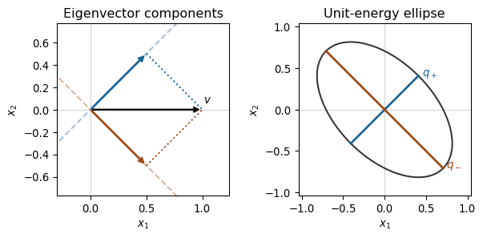

6 Session 5 — Eigenvalues and the Spectral Theorem
Session 4 gave us orthonormal coordinates for a subspace. Can we choose coordinates that also simplify the action of an operator? Consider the map \((x,y)\mapsto(2x+y,x+2y)\). Each output mixes both inputs. Yet a vector with \(x=y\) is simply tripled, and one with \(x=-y\) stays fixed. If we resolve the input along those two lines, even a hundred applications become a pair of scalar calculations.
Study route (90 minutes). Spend 15 minutes on invariant lines and multiplicity, 10 on change of basis, 15 on the spectral theorem, and 20 on powers, energy, and the numerical experiment. Reserve 25 minutes for the exercises and 5 for the final check. Keep a blank page for reconstructing the argument from \(Av=\lambda v\) to a formula for \(A^k v\).
6.1 Invariant lines and the shifted kernel
Let \(T:V\to V\) be a linear operator on a finite-dimensional space over \(\mathbb F=\mathbb R\) or \(\mathbb C\). A nonzero vector \(v\) is an eigenvector with eigenvalue \(\lambda\in\mathbb F\) if \(Tv=\lambda v\). The line spanned by \(v\) is invariant since \(T(cv)=c\lambda v\). Conversely, an invariant line gives an eigenvector by choosing any nonzero vector on it. Over \(\mathbb R\), \(|\lambda|\) is the length multiplier. A negative sign reverses direction, and \(\lambda=0\) collapses the whole line to the origin. The zero vector itself would satisfy the equation for every scalar, hence the requirement \(v\ne0\).
An operator acts on vectors. Its matrix \(A\) acts on their coordinate columns in a chosen basis. We use \(v\) also for the coordinate column when the basis is understood. The equation \(Av=\lambda v\) compares two vectors in the same space. For a map between different spaces the comparison would require an additional identification. Invertibility of \(A\) itself is unnecessary. Indeed, zero is an eigenvalue precisely when \(A\) is singular.
Finding the special directions. Move the right-hand side to the left. For square \(A\), Session 1’s kernel criterion gives
\[ \begin{aligned} \lambda\text{ is an eigenvalue} &\iff (A-\lambda I)v=0\text{ for some }v\ne0\\ &\iff \ker(A-\lambda I)\ne\{0\}\\ &\iff A-\lambda I\text{ is singular}\\ &\iff \det(A-\lambda I)=0 . \end{aligned} \]
Thus a determinant supplies candidate scalars, and solving a homogeneous system supplies their directions. We use the characteristic polynomial \(\chi_A(t)=\det(tI-A)\), which is monic and has the same roots as \(\det(A-tI)\). The set of eigenvalues is the spectrum. For each eigenvalue the eigenspace \(E_\lambda=\ker(A-\lambda I)\) is a subspace because it is a kernel. It includes zero, and every other member is an eigenvector.
A change of coordinates \(v=Sw\) gives \(Av=\lambda v\) exactly when \((S^{-1}AS)w=\lambda w\). The eigenvalue and the underlying subspace belong to \(T\). The coordinate description of that subspace changes to \(S^{-1}E_\lambda\).
Example (the field matters). A real quarter-turn has matrix \(R=\begin{pmatrix}0&-1\\1&0\end{pmatrix}\). It takes every real nonzero vector to a perpendicular vector, so it preserves no real line. Its characteristic polynomial \(t^2+1\) has roots \(i\) and \(-i\) over \(\mathbb C\). For example, \(R(1,-i)^T=(i,1)^T=i(1,-i)^T\). A complex invariant line can therefore exist even when no real line has that property.
6.2 Counting roots and counting independent directions
The algebraic multiplicity \(a_\lambda\) counts occurrences of the factor \(t-\lambda\) in \(\chi_A(t)\). The geometric multiplicity \(g_\lambda=\dim E_\lambda\) counts independent eigenvectors available at that eigenvalue. To see why \(1\le g_\lambda\le a_\lambda\), extend a basis of \(E_\lambda\) to a basis of the whole space. In those coordinates the first \(g_\lambda\) columns are the corresponding columns of \(\lambda I\), so the matrix is block upper triangular. Its characteristic polynomial contains the factor \((t-\lambda)^{g_\lambda}\).
Eigenvectors from distinct eigenvalues are linearly independent. More precisely, if \(\sum_{j=1}^s u_j=0\) with \(u_j\in E_{\lambda_j}\) for distinct \(\lambda_j\), apply \(\prod_{j\ne r}(A-\lambda_j I)\). Every term disappears except \(\bigl(\prod_{j\ne r}(\lambda_r-\lambda_j)\bigr)u_r\). Its scalar multiplier is nonzero, so \(u_r=0\) for every \(r\). Consequently the sum of the eigenspaces is direct. Its dimension is \(\sum_\lambda g_\lambda\).
Example (the same polynomial, two outcomes). Compare
\[ D=\begin{pmatrix}2&0\\0&2\end{pmatrix}, \qquad J=\begin{pmatrix}2&1\\0&2\end{pmatrix}. \]
Both have \(\chi(t)=(t-2)^2\). For \(D\), the equation \((D-2I)v=0\) imposes no restriction, so \(E_2=\mathbb F^2\). For \(J\), \((J-2I)(x,y)^T=(y,0)^T\), so \(E_2=\operatorname{span}\{(1,0)^T\}\). The vector \((0,1)^T\) acquires a first component under \(J\). There is only one independent eigendirection. We call \(J\) defective. Over \(\mathbb C\) the characteristic polynomial always has \(n\) roots counted with multiplicity, but the calculation for \(J\) shows exactly where a basis vector can be missing.
6.3 Diagonalization as a change of coordinates
Suppose the columns of \(V=[v_1,\ldots,v_n]\) form an eigenbasis and set \(\Lambda=\operatorname{diag}(\lambda_1,\ldots,\lambda_n)\) in the same order. The \(j\)th column of \(AV\) is \(\lambda_j v_j\), the \(j\)th column of \(V\Lambda\). Hence
\[ AV=V\Lambda,\qquad V^{-1}AV=\Lambda,\qquad A=V\Lambda V^{-1}. \]
Independence makes \(V\) invertible. Session 1’s change-of-basis formula now has a concrete interpretation. For an input \(x\), \(V^{-1}x\) gives eigenbasis coordinates, \(\Lambda\) scales each coordinate independently, and \(V\) returns the result to the original coordinates. The two matrices \(A\) and \(\Lambda\) represent the same operator and are similar.
Conversely, an invertible \(V\) satisfying \(AV=V\Lambda\) supplies an eigenbasis column by column. Thus \(A\) is diagonalizable over \(\mathbb F\) precisely when \(\mathbb F^n=\bigoplus_\lambda E_\lambda\), or equivalently when \(\sum_\lambda g_\lambda=n\). Having \(n\) distinct eigenvalues in the field suffices. Repeated eigenvalues also work if the characteristic polynomial splits in the field and every \(g_\lambda=a_\lambda\), as \(D\) illustrates.
Worked example (an oblique eigenbasis). Let \(B=\begin{pmatrix}2&1\\0&1\end{pmatrix}\). Triangularity gives roots \(2,1\). The equation for \(2\) gives \(y=0\) and that for \(1\) gives \(x+y=0\). Choose \((1,0)^T\) and \((-1,1)^T\), respectively. Then
\[ V=\begin{pmatrix}1&-1\\0&1\end{pmatrix},\quad V^{-1}=\begin{pmatrix}1&1\\0&1\end{pmatrix},\quad V\begin{pmatrix}2&0\\0&1\end{pmatrix}V^{-1} =\begin{pmatrix}2&1\\0&1\end{pmatrix}. \]
For input \((0,1)^T\) the eigenbasis coordinates are \((1,1)^T\). Scaling them gives \((2,1)^T\) in that basis and \((1,1)^T\) in the original basis. The eigenvectors have dot product \(-1\). Normalizing each column keeps the oblique angle, while Gram–Schmidt across the two lines would generally spoil the eigenvector property.
6.4 Why symmetry gives orthonormal eigencoordinates
Write \(A^*=\overline A^T\). A real matrix is symmetric when \(A^T=A\). A complex matrix is Hermitian when \(A^*=A\). With Session 2’s convention \(\langle x,y\rangle=y^*x\), linear in the first argument, Hermitian symmetry says \(\langle Ax,y\rangle=\langle x,Ay\rangle\). Two consequences drive the theorem.
- Reality. If \(Av=\lambda v\), then \(v^*Av=\lambda v^*v\). The left side equals its own conjugate since \(A^*=A\), and \(v^*v>0\). Dividing shows \(\lambda\in\mathbb R\).
- Orthogonality. If \(Au=\lambda u\) and \(Av=\mu v\), then \(\mu u^*v=u^*Av=(Au)^*v=\overline\lambda u^*v\). Both eigenvalues are real. If they differ, \(u^*v=0\).
Finite-dimensional spectral theorem.
Every Hermitian \(A\in\mathbb C^{n\times n}\) has an orthonormal eigenbasis. Equivalently \(A=Q\Lambda Q^*\) with \(Q^*Q=QQ^*=I\) and \(\Lambda\) real diagonal. Every real symmetric \(A\) admits the real form \(A=Q\Lambda Q^T\) with \(Q\) orthogonal.
Proof. Over \(\mathbb C\), the characteristic polynomial has a root, so choose a unit eigenvector \(q\). For a real symmetric matrix we can also start over \(\mathbb C\). Its eigenvalue is real by the argument above, and the real and imaginary parts of an eigenvector separately satisfy the real eigenvector equation. At least one part is nonzero and can be normalized. Now take \(x\in q^\perp\). Then \(q^*Ax=(Aq)^*x=\lambda q^*x=0\). Thus \(q^\perp\) is invariant, and the restriction of \(A\) to it is again self-adjoint in its inherited inner product. Apply the same argument in this space of dimension \(n-1\). Induction supplies the remaining orthonormal eigenvectors. The factorization follows from \(AQ=Q\Lambda\) and \(Q^{-1}=Q^*\).
Distinct eigenspaces are mutually orthogonal. Inside a repeated eigenspace, any linear combination stays in that eigenspace, so Session 2’s Gram–Schmidt procedure can be used freely there. The full decomposition is an orthogonal direct sum. The inverse coordinate map is just \(Q^*\), and a coordinate error \(\delta c\) satisfies \(\|Q\delta c\|_2^2=\delta c^*Q^*Q\delta c=\|\delta c\|_2^2\). This length preservation explains a numerical advantage over an oblique eigenbasis. More generally a complex normal matrix (\(A^*A=AA^*\)) admits unitary diagonalization. Its diagonal entries can be complex, as the quarter-turn illustrates.
6.5 Spectral projectors and matrix powers
For an orthonormal eigenbasis write \(c_i=q_i^*v\). Session 3 identifies \(P_i=q_iq_i^*\) as the orthogonal projector onto \(\operatorname{span}\{q_i\}\), since \(P_iv=(q_i^*v)q_i\). Orthonormality gives \(P_iP_j=0\) for \(i\ne j\), \(P_i^2=P_i\), and \(\sum_iP_i=I\). Expanding the matrix product gives the spectral decomposition
\[ A=Q\Lambda Q^*=\sum_i\lambda_i q_iq_i^*. \]
For a repeated eigenvalue use \(P_\lambda=\sum_{i:\lambda_i=\lambda}q_iq_i^*\). This is the unique orthogonal projector onto the entire eigenspace, independent of the chosen basis there. Then \(A=\sum_{\lambda}\lambda P_\lambda\), summing once per distinct eigenvalue.
Derive the power formula. Multiply two copies of the factorization. The middle \(Q^*Q\) cancels, giving \(A^2=Q\Lambda^2 Q^*\). Each additional multiplication adds one diagonal factor. For \(k=0\) use \(A^0=I\) and \(\Lambda^0=I\), including on a zero eigenspace. Hence for any integer \(k\ge0\),
\[ A^k v=Q\Lambda^kQ^*v =\sum_i \lambda_i^k(q_i^*v)q_i =\sum_{\lambda}\lambda^k P_\lambda v . \]
Read this from right to left in the matrix product. Compute the coordinates once, raise scalar multipliers to the desired power, and reassemble. No component can feed into another. A component with \(|\lambda|<1\) decays, one with \(|\lambda|>1\) grows in magnitude if present, and a negative eigenvalue alternates its sign. An initially absent component remains absent however large its multiplier.
Worked example (from a kernel to a power). Return to the opening map with
\[ A=\begin{pmatrix}2&1\\1&2\end{pmatrix},\qquad v=(1,0)^T. \]
The equation \((2-t)^2-1=0\) gives \(3\) and \(1\). The first row of \(A-3I\) gives \(y=x\), and that of \(A-I\) gives \(y=-x\). Normalize to obtain \(q_+=(1,1)^T/\sqrt2\), \(q_-=(1,-1)^T/\sqrt2\). In that order \(Q=[q_+,q_-]\) has \(Q^TQ=I\) and \(\Lambda=\operatorname{diag}(3,1)\). Explicitly,
\[ P_+=\tfrac12\begin{pmatrix}1&1\\1&1\end{pmatrix},\qquad P_-=\tfrac12\begin{pmatrix}1&-1\\-1&1\end{pmatrix},\qquad A=3P_++P_-. \]
The first columns of the projectors give \(P_+v=(1,1)^T/2\) and \(P_-v=(1,-1)^T/2\). Thus
\[ A^kv=\tfrac12(3^k+1,\,3^k-1)^T,\qquad A^3v=(14,13)^T. \]
Check directly. Starting from \((1,0)^T\), successive applications give \((2,1)^T\), \((5,4)^T\), then \((14,13)^T\). The two entries approach equality relative to their size, because the ratio of the two eigencoordinate magnitudes is \(3^{-k}\). Starting instead on \(y=-x\) would give a stationary vector for every \(k\).
6.6 Positive definiteness and the geometry of energy
For Hermitian \(A\), the scalar \(x^*Ax\) is real. We call \(A\) positive definite if \(x^*Ax>0\) for every nonzero \(x\), and positive semidefinite if \(x^*Ax\ge0\) for every \(x\). The same definitions with transpose apply to real symmetric matrices. Write \(c=Q^*x\). Then
\[ x^*Ax=c^*\Lambda c=\sum_i\lambda_i|c_i|^2 . \]
If every eigenvalue is positive, every nonzero \(x\) contributes at least one positive term. If all eigenvalues are nonnegative, the sum is nonnegative. Conversely, substituting each unit eigenvector yields \(q_i^*Aq_i=\lambda_i\). This proves both equivalences, including strict positivity in the definite case. For a semidefinite matrix, zero energy occurs exactly in its kernel.
For the running matrix, \(x^TAx=2x_1^2+2x_1x_2+2x_2^2=3c_+^2+c_-^2\). The level set \(x^TAx=1\) is an ellipse with semiaxes \(1/\sqrt3\) along \(q_+\) and \(1\) along \(q_-\). A larger eigenvalue means that the energy reaches one after a shorter displacement. Compare the two panels below. The same direction that \(A\) stretches most is the shortest semiaxis of its unit-energy ellipse.
In real quadratic optimization the energy \(F(x)=\tfrac12 x^TAx-b^Tx\) has gradient \(Ax-b\) for symmetric \(A\). Positive definiteness gives strictly positive curvature in every direction and a unique minimizer \(A^{-1}b\). In a stiffness matrix this form can measure deformation energy. The same structure permits Cholesky factorization \(A=LL^*\) and underlies the conjugate gradient method for minimizing the quadratic energy of a real SPD system.
6.7 Numerical experiment
Use a Hermitian eigensolver for the running example. NumPy returns eigenvalues in ascending order and the corresponding eigenvectors in columns. A column may have the opposite sign from a hand calculation. Its projector and its contribution to \(A^kv\) remain identical.
import numpy as np
A = np.array([[2., 1.], [1., 2.]])
v = np.array([1., 0.])
k = 3
lam, Q = np.linalg.eigh(A)
reconstructed = (Q * lam) @ Q.T # scale column j by lam[j]
spectral = Q @ (lam**k * (Q.T @ v))
direct = np.linalg.matrix_power(A, k) @ v
print("Eigenvalues:", lam)
print("Orthogonality error:", np.linalg.norm(Q.T @ Q - np.eye(2)))
print("Reconstruction error:", np.linalg.norm(A - reconstructed))
print("Spectral and direct results:", spectral, direct)
for computed, expected in [(Q.T @ Q, np.eye(2)),
(reconstructed, A), (spectral, direct)]:
np.testing.assert_allclose(computed, expected, rtol=0, atol=1e-12)Eigenvalues: [1. 3.]
Orthogonality error: 3.1560822113208575e-16
Reconstruction error: 6.473657049138938e-16
Spectral and direct results: [14. 13.] [14. 13.]In exact arithmetic both matrix errors vanish and the two vectors equal \((14,13)^T\). Floating-point normalization introduces rounding, so inspect the errors and compare against a tolerance. The absolute tolerance here is chosen for this small example and its scale.
6.8 What the seminar algorithms exploit
- Power iteration. Suppose \(|\lambda_1|>|\lambda_2|\ge\cdots\) and \(c_1\ne0\). For \(j>1\) the magnitude of component \(j\) relative to component \(1\) is \(|c_j/c_1|\,|\lambda_j/\lambda_1|^k\). The ratio of eigenvalue magnitudes determines how rapidly directions separate. Normalization preserves those ratios. A tie in magnitude removes this separation, and a negative dominant eigenvalue can make the normalized vector alternate sign.
- Subspace iteration. A block \(X\) carries several input vectors. In eigencoordinates \(Q^*A^kX=\Lambda^k Q^*X\), so each row of coefficients is scaled by the corresponding power. Several wanted directions can survive if the initial block represents them independently. Session 4’s thin QR supplies a fresh orthonormal basis of the current block’s range when it has full column rank. The target is an invariant subspace \(U\) satisfying \(AU\subseteq U\).
- Polynomial filtering. For \(p(t)=\sum_{j=0}^d a_jt^j\), the identity \(A^jq_i=\lambda_i^j q_i\) gives \(p(A)q_i=\sum_j a_j\lambda_i^j q_i=p(\lambda_i)q_i\). A Chebyshev filter is designed to make \(|p(\lambda)|\) large on wanted eigenvalues relative to its size on the unwanted interval. Filtering changes the weights while preserving the eigenvectors.
- Rayleigh–Ritz. Let \(W\) have orthonormal columns spanning a trial subspace. The projection of \(AWz\) back into the subspace is \(WW^*AWz\). Its small coordinate vector is \(Hz\) with \(H=W^*AW\), Hermitian when \(A\) is Hermitian. If \(Hz=\theta z\), the lifted residual \(AWz-\theta Wz\) is orthogonal to the trial space. This gives a way to extract approximate eigenpairs from the block.
Course reading. The revision route follows §§1.3, 1.3.3 and 1.4.4 of the book. For the lecture’s spectral terminology and similarity conventions see Kanschat and Scheichl, Numerical Linear Algebra, §3.1 and Appendix A.1.2. Section 3.2 begins the later conditioning discussion. For the real symmetric case see Scheichl and Zech, Numerik 0, §3.2, and Bastian, Numerik 0, §§5.3 and 5.6.
6.9 Independent exercises
- Shift and solve (3 min). For \(C=\begin{pmatrix}0&2\\0&2\end{pmatrix}\), find both eigenvalues and eigenspaces. Give their dimensions and an eigenbasis. What happens geometrically on the zero eigenspace?
- A repeated root (4 min). Let \(B_s=\begin{pmatrix}4&s&0\\0&4&0\\0&0&1\end{pmatrix}\). Give both multiplicities at every eigenvalue and decide for which real \(s\) the matrix is diagonalizable. Identify the equation responsible for the change.
- Reconstruct the proof (4 min). Starting from \(A^*=A\), prove that all eigenvalues are real and that the orthogonal complement of a unit eigenvector is invariant. Explain how this yields an orthonormal eigenbasis even if the characteristic polynomial has a repeated root.
- Mastery problem (7 min). For \(S=\begin{pmatrix}3&-1\\-1&3\end{pmatrix}\) and \(w=(2,0)^T\), find the eigenvalues and an orthonormal eigenbasis. Write the two spectral projectors and the decomposition of \(S\). Compute \(S^4w\), decide definiteness, and identify the shorter semiaxis of \(x^TSx=1\).
- A complex eigenspace (3 min). For \(H=\begin{pmatrix}1&i\\-i&1\end{pmatrix}\), find unit eigenvectors. Classify its quadratic form and give a nonzero vector of zero energy. Check orthogonality using the complex inner product.
- Design a filter (4 min). A Hermitian operator has eigenvalues \(-2,1,4\), with orthogonal spectral projectors \(P_{-2},P_1,P_4\). Construct a polynomial of degree at most two whose matrix action is exactly \(P_4\). Prove your claim for arbitrary input. What happens if the initial vector has no component in \(E_4\)?
6.10 Worked solutions
1. Shift and solve. Triangularity gives \(\chi_C(t)=t(t-2)\). At \(0\) the kernel equation is \(2y=0\), so \(E_0=\operatorname{span}\{(1,0)^T\}\). At \(2\) the first row gives \(-2x+2y=0\), so \(E_2=\operatorname{span}\{(1,1)^T\}\). Both have dimension one. The displayed spanning vectors are independent and form an eigenbasis. The first line maps entirely to the origin.
2. A repeated root. The diagonal gives algebraic multiplicities two at \(4\) and one at \(1\). At \(4\) the equations reduce to \(sy=0\) and \(z=0\). When \(s=0\) the eigenspace is the entire \(xy\)-plane and has dimension two. For \(s\ne0\) it is the \(x\)-axis and has dimension one. At \(1\), \(3y=0\) and \(3x+sy=0\) give \(x=y=0\) for every \(s\), leaving the \(z\)-axis. Thus the dimensions add to three exactly when \(s=0\).
3. Reconstruct the proof. For \(Av=\lambda v\) with \(v\ne0\), conjugating \(v^*Av\) leaves it unchanged. Its ratio to \(v^*v\) is therefore real and equals \(\lambda\). Choose a unit eigenvector \(q\) using a root of the characteristic polynomial over \(\mathbb C\) (for real symmetric \(A\) take a nonzero real or imaginary part and normalize). For \(q^*x=0\), \(q^*Ax=(Aq)^*x=\lambda q^*x=0\). Thus the restriction to \(q^\perp\) maps that space into itself and retains the self-adjoint inner product identity. Induct on its dimension, with the one-dimensional case immediate. This removes one orthogonal direction per step, regardless of root multiplicities.
4. Mastery problem. The characteristic polynomial \((t-3)^2-1\) gives \(2,4\). At \(2\) the kernel condition is \(x=y\), and at \(4\) it is \(x=-y\). Unit eigenvectors are \(u=(1,1)^T/\sqrt2\) and \(z=(1,-1)^T/\sqrt2\), respectively. Thus \(S=2P_2+4P_4\) with
\[ P_2=uu^T=\tfrac12\begin{pmatrix}1&1\\1&1\end{pmatrix},\qquad P_4=zz^T=\tfrac12\begin{pmatrix}1&-1\\-1&1\end{pmatrix}. \]
The projected inputs are \((1,1)^T\) and \((1,-1)^T\). Raising only the multipliers gives \(S^4w=16(1,1)^T+256(1,-1)^T=(272,-240)^T\). Both eigenvalues are positive, so \(S\) is positive definite. It doubles lengths along \(u\) and quadruples them along \(z\). Unit energy is reached at distances \(1/\sqrt2\) and \(1/2\), respectively, giving the shorter semiaxis along \(z\).
5. A complex eigenspace. The characteristic polynomial \((t-1)^2-1\) gives \(0,2\). At \(0\) solve \(x+iy=0\), and at \(2\) solve \(-x+iy=0\). Take \(u=(-i,1)^T/\sqrt2\) and \(z=(i,1)^T/\sqrt2\), respectively. Then \(u^*z=(i\cdot i+1)/2=0\). Since \(H^*=H\) and its eigenvalues are nonnegative with one zero, it is positive semidefinite and singular. In particular \(u^*Hu=0\).
6. Design a filter. Both unwanted eigenvalues must be roots. Choose \(p(t)=(t+2)(t-1)/18\) so \(p(4)=1\). On \(E_\lambda\) each power \(A^j\) acts by \(\lambda^j\), hence \(p(A)\) acts by \(p(\lambda)\). Decompose any input into its three orthogonal projections. The first two vanish after filtering and the third is unchanged, so \(p(A)v=P_4v\). If the wanted component was absent the output is zero. This exact filter uses known eigenvalues. Interval filtering in the seminar uses bounds on a spectral interval instead.
6.11 End-of-session mastery checklist
On a blank page, check whether you can do each of the following.
Ready for Session 6. Redo the mastery problem without the solution. Check your projectors by verifying \(P_2+P_4=I\), then use them to explain why \(\|Sx\|_2\) for a unit vector lies between \(2\) and \(4\). Identifying the directions that attain those endpoints is the bridge to matrix norms and conditioning.